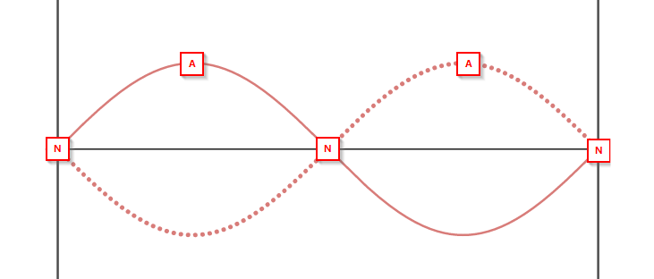

The Sound of Music
Back To OverviewA progressive wave is the transfer of energy via oscillations. They transfer energy without transferring matter.
The amplitude (A) of a wave is the maximum displacement of particles from their equilibrium position.
The frequency (f) of a wave is the number of cycles passing a point in one second.
The period (T) of a wave is the time taken to complete one full cycle.
\(T=\frac{1}{f}\)
The speed (v) of a wave is the distance travelled per unit time.
\(v=f\lambda\)
The wavelength (λ) of a wave is the distance between one point on a wave and the same point on the next.
In a transverse wave, the particles oscillate perpendicular to the direction of energy transfer.
In a longitudinal wave, the particles oscillate parallel to the direction of energy transfer, as a series of compressions and rarefactions.
A compression is an area of higher pressure, where the particles are closer together, whereas a rarefaction is an area of lower pressure, where the particles are more spread out.
A displacement-distance graph shows you a "snapshot" of the wave. For a transverse wave, the displacement is measured vertically from the equilibrium position however for a longitudinal wave, the displacement is measured horizontally from the equilibrium position.
A displacement-time graph shows how just one particle moves as the wave travels.
For longitudinal waves you can also plot pressure-distance graphs:
CORE PRACTICAL 6: Determine the speed of sound in air using a 2-beam oscilloscope, signal generator, speaker and microphone
Diagram:
Method:
The phase of a wave is how far it is through its cycle, and is measured in degrees / radians.
A wavefront is a line joining points of equal phase.
Two waves are coherent if they have the same frequency and a constant phase difference.
Path difference is the difference in distance travelled by two waves to the same point.
Superposition is the combination of multiple waves. When two or more waves meet at the same point, the resultant displacement is equal to the sum of the displacements of the individual waves.
If two waves are in-phase, then their phase difference is an integer multiple of \(360^{\circ}\), or \(2\pi\,rad\).
If two waves are in anti-phase, then their phase difference is an odd multiple of \(180^{\circ}\), or \(\pi\,rad\).
If the path difference is a whole number of wavelengths (\(n\lambda\)), then the waves are in-phase.
If the path difference is half a wavelength, or \((n-\frac{1}{2})\lambda\), then the waves are in anti-phase.
Constructive interference is when two or more waves meet in-phase and superpose upon each other, resulting in a larger resultant displacement.
Destructive interference is when two or more waves meet in anti-phase and superpose upon each other, resulting in a smaller resultant displacement.
A standing wave or stationary wave consists of a pattern of nodes (areas of no displacement) and anti-nodes (areas of maximum displacement). They do not transfer energy.
They are formed by the superposition of two coherent waves of the same speed travelling in opposite directions (e.g. a wave and its reflection).
On a string, the incident wave is reflected from the fixed end of the string, and the reflected wave superposes with the incident wave to create a standing wave.
All points between two adjacent nodes are in-phase, but have different amplitudes.
The equation for the speed of a transverse wave on a string is:
\(v=\sqrt{\frac{T}{\mu}}\)
Where \(v\) is wave speed, \(T\) is the tension of the string, and \(\mu\) is the mass per unit length of the string.
CORE PRACTICAL 7: Investigate the effects of length, tension and mass per unit length on the frequency of a vibrating string or wire.
Diagram:
Method:
\(E=hf\)
Where \(E\) is the photon energy, \(h\) is \(6.63\times10^{-34}\) and \(f\) is the wave frequency.